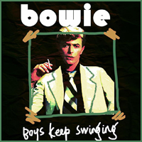
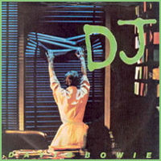
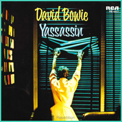
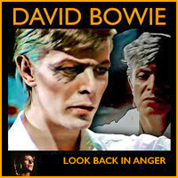

1979 - LODGER |
||||
Having taken the iconic photo that graced Aladdin Sane's front cover, London-based photographer Brian Duffy was called upon to shoot Bowie's final album artwork of the 70s, Lodger. Designed by British pop artist Derek Boshier, the gatefold sleeve opened out to picture Bowie as an accident victim; the broken nose was achieved through make-up, but the bandaged hand came from a real incident - Bowie had burned himself with coffee earlier that morning. To achieve the shot - one of the more unsettling David Bowie album covers - the singer had to balance on a steel frame while Duffy took the photo from above. Photographer: Brian Duffy | Designer: Derek Boshier |
||||
FANTASTIC VOYAGE In the event that this fantastic voyage Should turn to erosion And we never get old Remember it's true Dignity is valuable But our lives are valuable too We're learning to live with somebody's depression And I don't want to live with somebody's depression We'll get by, I suppose It's a very modern world But nobody's perfect It's a moving world But that's no reason To shoot some of those missiles Think of us as fatherless scum It won't be forgotten 'Cause we'll never say anything nice again Will we? And the wrong words make you listen In this criminal world Remember it's true Loyalty is valuable But our lives are valuable too We're learning to live with somebody's depression And I don't want to live with somebody's depression We'll get by, I suppose But any sudden movement I've got to write it down They wipe out an entire race and I've got to write it down But I'm still getting educated But I've got to write it down And it won't be forgotten 'Cause I'll never say anything nice again How can I? AFRICAN NIGHT FLIGHT African night flight one-time Mormon More men fall in Hullabaloo men I slide to the nearest bar Undermine chairman, I went too far Bent on a windfall, rent a Sony Wonder how the dollar went down Got to get a word to Elizabeth's father Hey ho, he wished me well Seemed like another day I could fly Into the eye of God on high His burning eye will see me through One of these days, one of these days Got to get a word through one of these days His burning eye will see me through One of these days, one of these days Got to get a word through one of these days Asante habari habari ha Asante nabana nabana na Getting in the mood for a Mombasa night flight Pushing my luck, going to fly like a mad thing Bare strip takeoff, skimming over Rhino Born in slumber, less than peace Struggle with a child, whose screaming, dreaming Drowned by the props all steely sunshine Sick of you, sick of me Lust for the free life, quashed and maimed Like a valuable loved one left unnamed Seems like another day I could fly Into the eye of God on high Seems like another day I could fly Into the eye of God on high Over the bushland, over the trees Wise like orangutan, that was me His burning eye will see me through One of these days, one of these days Got to get a word through one of these days His burning eye will see me through One of these days, one of these days Got to get a word through one of these days Asante habari habari ha Asante nabana nabana na MOVE ON Sometimes I feel the need to move on So I pack a bag and move on Move on Well, I might take a train or sail at dawn Might take a girl when I move on When I move on Somewhere, someone is calling me When the chips are down I am just a travelling man Maybe it is just a trick of the mind But somewhere there is a morning sky Bluer than her eyes Somewhere there's an ocean Innocent and wild Africa is sleepy people Russia has its horsemen Spent some nights in old Kyoto Sleeping on the matted ground Cyprus is my island When the going's rough I would love to find you Somewhere in a place like that Mahi-ya, mahi-yo, mahi-ya, mahi-yo Mahi-ya, mahi-yo, mahi-ya, mahi-yo Somewhere, someone's calling me When the chips are down I stumble like a blind man I can't forget you, can't forget you Feeling like a shadow Drifting like a leaf I stumble like a blind man I can't forget you, can't forget you I can't forget you, can't forget you YASSASSIN (Yassassin) I'm not a moody guy (Yassassin) I walk without a sound (Yassassin) Just a working man, no judge of men (Yassassin) But such a life I've never known We came from the farmlands To live in this city We walked proud and lustful In this resonant world You want to fight But I don't want to leave Or drift away (Yassassin) I'm not a moody guy (Yassassin) I walk without a sound (Yassassin) Just a working man, no judge of men (Yassassin) But such a life I've never known Look at this, no second glances Look at this, no value of love Look at this, just sun and steel Look at this, then look at us If there's someone in charge Then listen to me Don't say nothing is wrong 'Cause I have got a love and she is-a feared You want to fight But I don't want to leave Or drift away (Yassassin) I'm not a moody guy (Yassassin) I walk without a sound (Yassassin) Just a working man, no judge of men (Yassassin) But such a life I've never known (Yassassin) I'm not a moody guy (Yassassin) I walk without a sound (Yassassin) Just a working man, no judge of men (Yassassin) But such a life I've never known Yassassin, Yassassin, Yassassin RED SAILS I feel a little roughed up, feel a bit frightened Nearly pin it down some time Red sail action, wake up in the wrong town Boy, I really get around Thunder ocean, thunder ocean Red sails take me, make me sail along Red sails, and a mast so tall Red sails, red sails Do you remember, we another person Green and black and red and so scared Graffiti on the wall keep us all in tune Bringing us all back home Red sails, thunder ocean Red sails, sailor can't dance like you Red sail, red sail action Red sail, some reaction Action boy seen living under neon Struggle with a foreign tongue Red sails make him strong Action make him sail along Life stands still and stares The hinterland, the hinterland We're going to sail to the hinterland And it's far far, far far far, far far far away It's a far far, far far far, fa da, da da da 1, 2, 3, 4 Ooh D.J. I am home, lost my job And incurably ill You think this is easy, realism I've got a girl out there, I suppose I think she's dancing Feel like Dan Dare lies down I think she's dancing, what do I know? I am a D.J., I am what I play Can't turn around, no, can't turn around, no, oh ooh I am a D.J., I am what I play Can't turn around, no, turn around no, oh no I am a D.J., I am what I play I've got believers Believing in me One more weekend Of lights and evening faces Fast food, living nostalgia Humble pie or bitter fruit I am a D.J., I am what I play Can't turn around, no, can't turn around, no, oh, ooh I am a D.J., I am what I say Can't turn around, no, can't turn around, ooh I am a D.J., I am what I play I've got believers Believing me I am a D.J., I am what I play Can't turn around, no, can't turn around I am a D.J., I am what I play Can't turn around, no, can't turn around I am a D.J., I am what I play Can't turn around no (kiss-kiss) Time flies when you're having fun Break his heart, break her heart He used to be my boss and now he is a puppet dancer I am a D.J., and I've got believers I've got believers, I've got believers I've got believers in me (I've got believers) I am a D.J., I am what I play, I am a D.J LOOK BACK IN ANGER "You know who I am," he said The speaker was an angel He coughed and shook his crumpled wings Closed his eyes and moved his lips "It's time we should be going" (Waiting so long, I've been waiting so, waiting so) Look back in anger, driven by the night 'Til you come (Waiting so long, I've been waiting so, waiting so) Look back in anger, see it in my eyes 'Til you come No one seemed to hear him So he leafed through a magazine And, yawning, rubbed the sleep away Very sane he seemed to me (Waiting so long, I've been waiting so, waiting so) Look back in anger, driven by the night 'Til you come (Waiting so long, I've been waiting so, waiting so) Look back in anger, feel it in my voice 'Til you come (Waiting so long, ah...) (Waiting so long, I've been waiting so, waiting so) (Waiting so long, I've been waiting so, waiting so) (Waiting so long) BOYS KEEP SWINGING Heaven loves ya The clouds part for ya Nothing stands in your way when you're a boy Clothes always fit ya Life is a pop of the cherry when you're a boy When you're a boy, you can wear a uniform When you're a boy, other boys check you out You get a girl, these are your favorite things When you're a boy Boys Boys Boys keep swinging Boys always work it out Uncage the colors, unfurl the flag Luck just kissed you hello When you're a boy They'll never clone you, you are always first on the line When you're a boy When you're a boy, you can buy a home of your own When you're a boy, learn to drive and everything You'll get your share When you're a boy Boys Boys Boys keep swinging Boys always work it out REPETITION Johnny is a man and he's bigger than you But his overheads are high And he looks straight through you When you ask him how the kids are He'll get home around seven 'Cause the Chevy's real old And he could have had a Cadillac If the school had taught him right And he could have married Anne with the blue silk blouse He could have married Anne with the blue silk blouse And the food is on the table but the food is cold (Don't hit her) Can't you even cook? What's the good of me working when you can't damn cook? Well, Johnny is a man and he's bigger than her I guess the bruises won't show If she wears long sleeves But the space in her eyes shows through And he could have married Anne with the blue silk blouse He could have married Anne with the blue silk blouse It shows through It shows through It shows through RED MONEY Oh, can you feel it in the way That a man is not a man? Can you see it in the sky That the landscape is too high? Like a nervous disease (And it's been there all along) It will tumble from the sky (And it's been there all along) Project cancelled Tumbling central Red money Can you hear it fall? Can you hear it well? Can you hear it at all? I was really feeling good Reet Petite and how'd you do Then I got the small red box And I didn't know what to do 'Cause my fingers could not grope And I could not give it away And I knew I must not drop it, stop it, take it away Project cancelled Tumbling central Red money Can you hear it fall? Can you hear it well? Can you hear it at all? Project cancelled Tumbling central Red money Can you hear it fall? Can you hear it well? Can you hear it at all? Can you hear it at all? Can you hear it at all? Red money Red money Red money Red money Such responsibility It's up to you and me |
||||
SINGLES |
||||
    |
||||